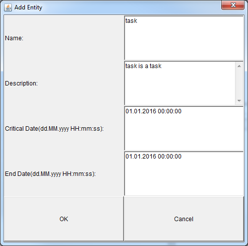

ToDo Liste
Dieses Projekt wurde in Java Programmiert und verwendet XML zum Speichern der ToDo Liste.ToDo:
- Einfügen eines Schemas zum überprüfen der XML
- Einfügen eines Dialogs zum herausfinden des Datums
- Überarbeiten der Darstellung der Liste
Screenshots
Windows:
Mac: